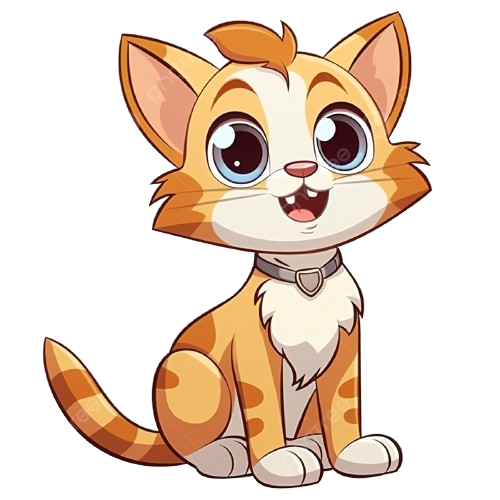

Un gato es un animal pequeño y peludo que a muchas personas les gusta tener como mascota, tiene cuatro patas, una cola larga y bigotes en su cara. Los gatos suelen decir "miau" y les encanta ronronear y dormir mucho.